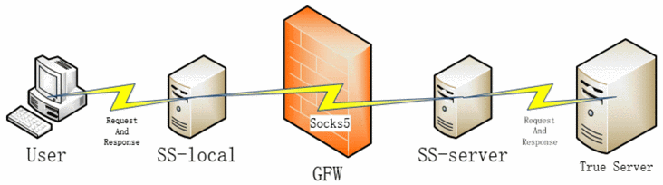
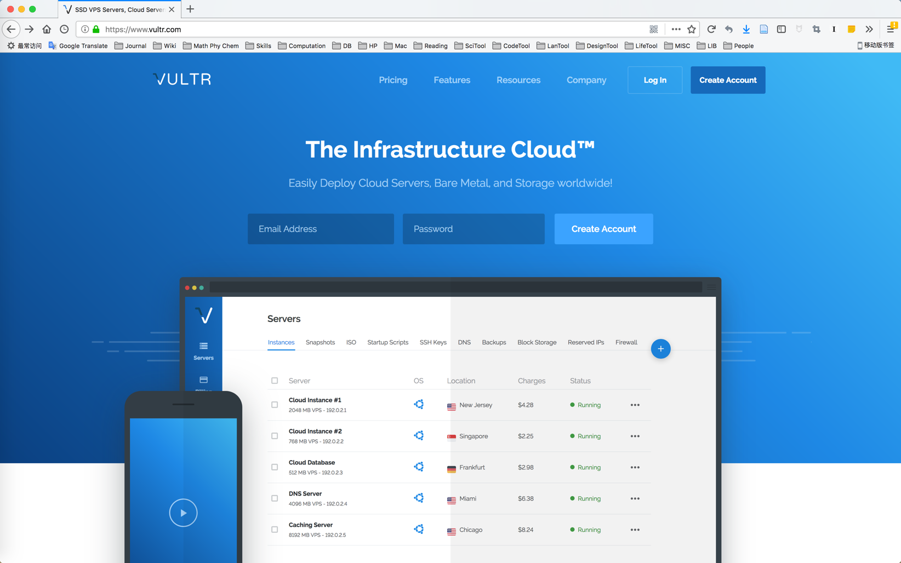
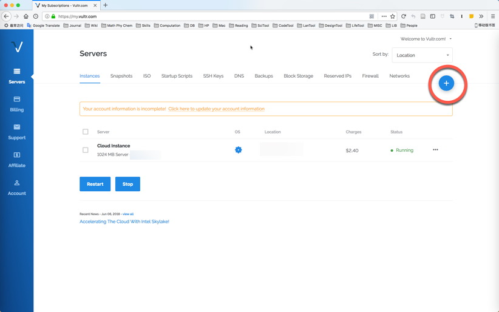
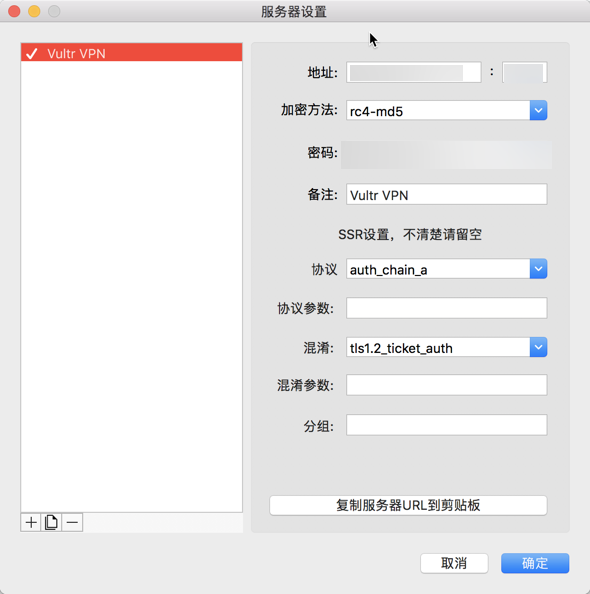

VPS与SSR配置科学上网
前言
本文简单介绍了使用Shadowsocks翻越GFW实现对包括Google、Youtube、Twitter在内的国外网站的访问，叙述了基于Vultr公司服务器的SSR服务端部署和macOS/Windows客户端使用方法。
背景
谷歌搜索对于学术研究的重要性无须赘述，Youtube上原创的优秀的讲座、课程录像和视频教程对于自学者来说也是非常好的资源。Facebook和Twitter也能帮助我们取得与外国同学的联系。但对于非IPv6用户而言，由于GFW的存在，直接连接这些网站的尝试最后都是徒劳。目前的解决方案包括hosts文件、VPN以及Shadowsocks。hosts文件指定域名解析IP，避免DNS污染，但通常隔一段时间需要更换，且周期不定。VPN通常价格较高，且同时使用的终端数量一般是受限的。Shadowsocks本身只是一个协议，它需要境外服务器支持，但使用VPS作为服务器，可以在较低价格情况下(￥15/月)同时保证10台左右终端的正常流量需求，且只要VPS的IP不被屏蔽，可以一直使用下去，不必更换。
VPN越来越贵，hosts不灵的频率越来越高，于是以最近一次hosts失效为契机，我研究了一下。
最近在BBS上看到别人推荐V2Ray项目，待以后补充。
名词解释
Virtual Private Server (VPS)
虚拟专有服务器, 是"将一台服务器分区成多个虚拟专享服务器的服务"(中文维基)，通常是由专门的VPS供应商提供。它的核心是基于虚拟机技术，将单个物理服务器的硬盘、网络、CPU计算、内存等资源进行隔离，模拟出多个独立服务器的使用体验。不同VPS在软件上相互独立，都可以独立地安装操作系统、启动与重启，用户在其上拥有超级用户权限，可进行自由配置和软件安装。缺点是，由于多个VPS用户在同一个物理服务器上，硬件资源会相互影响，特别是当供应商超卖导致超负荷时。专有服务器(Dedicated server)不存在这种情形，但也因为单个用户独占物理服务器，价格要比VPS高很多。
Shadowsocks (SS)
由clowwindy首先开发的一个开源的加密代理项目，主要用于绕过GFW对国内网络请求的检测。其原理如图所示(来源)。在服务器端设置好密码、端口、协议、加密方式等等，客户端以相同的设置连接服务端。成功连接后，客户端与服务端之间建立sock5连接。在一次网络通信时，首先由本地客户端发送请求，与SS客户端通信。然后，SS客户端将请求加密，数据包以普通TCP包的外观发送到SS服务端。随后，SS服务端将数据包解密，将请求传递给墙外的网络服务器，最后再将网站响应数据返回给SS客户端。

由于历史原因，我们还需要决定用什么版本的SS。笔者在这里使用的是ShadowsocksR，它相比原版SS具有更多功能。尽管经历了疑似违反GPL的事件，但目前SSR源码已经公开且开发人员主要由新贡献者构成，它也是当前SS的主要项目分支(中文维基20180702)。
Proxy Auto-Config (PAC)
代理自动配置。PAC定义了"如何自动选择适当的代理服务器来访问一个网址(中文维基)"。使用PAC需要一个PAC文件，其中必须包含名为FindProxyForURL的javascript函数。一个简单的例子是(来自中文维基)
1 | function FindProxyForURL(url, host){ |
Step by step: 基于Vultr VPS的SSR
基于SS原理我们可以知道，为了使用SSR，我们需要部署SSR客户端和服务端，而服务端需要部署在境外服务器上。那么需要做什么事情就很清楚了
购买境外VPS
在VPS上部署SS服务端
在本地部署SS客户端
接下来我们一条条看。
购买服务器
境外服务器选择Vultr公司。访问主页(如下图)，注册账号后登录到个人页面管理。

个人页面如下所示，点击右上角加号部署新服务器

在新服务器的配置中，需要选择以下项目
Server Location
服务器位置。根据自己的网络情况选择最佳的服务器，一般判断标准是PING延迟，以及是否有较便宜的规模可供选择1
2
3
4
5
6
7
8
9
10 ping hnd-jp-ping.vultr.com # Tokyo
ping sgp-ping.vult.com # Singapore
ping sjo-ca-us-ping.vultr.com # Silicon Valley, CA
ping lax-ca-us-ping.vultr.com # Los Angeles, CA
ping fra-de-ping.vultr.com # Frankfurt
ping nj-us-ping.vultr.com # NY, New Jersey
ping il-us-ping.vultr.com # Chicago, Illinois
ping fl-us-ping.vultr.com # Miami, Florida
ping syd-au-ping.vultr.com # Sydney, Australia
ping lon-gb-ping.vultr.com # London, UK
Server Type
操作系统。推荐选择比较稳定的Linux发行版，如CentOS, Ubuntu LTS等。推荐CentOS。
Server Size
服务器资费方案。一般来说，最低\$2.5的500G带宽足够个人或者三五同学公用的需求。但近日(20180714)发现这个方案已经不再分配公网IPv4，所以改用\$5的方案。这个价格比某些廉价VPN要贵不少，所以推荐多人分摊公用，这样既不浪费带宽，也能省些钱。
Additional Features
额外特性。建议启用IPv6和DDoS保护(部分地区服务器支持)。
完成
选择好后点击deploy完成部署，等待自动安装。完成后点击主页上刚刚部署的服务器右侧的三个小点，选择Server Details，记下IP Address和Password。Vultr网站上的准备到这里就完成了。
部署服务端
在终端上用ssh登录刚刚部署的服务器(CentOS)，用户为root(根用户)。首次登录最好先进行更新，同时改掉初始密码1
2
3 ssh root@vultrip # with Password
yum update # for first login
passwd # change password
登录后部署服务端。我们使用秋水逸冰的一键安装脚本1
wget --no-check-certificate -O shadowsocks-all.sh https://raw.githubusercontent.com/teddysun/shadowsocks_install/master/shadowsocks-all.sh
加上执行权限后运行之1
2 chmod +x shadowsocks-all.sh
./shadowsocks-all.sh 2>&1 | tee shadowsocks-all.log
过程中需要依次对以下内容进行设置
- SS版本。选择SSR (2)。
- 密码。
- 端口(port)。初始端口随机生成。
- 加密方法(encryption)。
- 协议(protocol)。
- 混淆(obf)。
记下以上设置，回车安装。上述设置也可以在shadowsocks-all.log中查询。接下来就可以退出服务器，回到本地设置客户端。
部署客户端
macOS
推荐使用ShadowsocksX-NG作为客户端。在GitHub上下载最新版本(Release标签内)，解压缩、安装。启用后单击右上角标记，按照上一步中的服务端部署方式，编辑服务器设置。

编辑完后点击"打开Shadowsocks"，即可使用。
Windows
推荐使用Shadowsocks-windows。下载解压后运行，双击任务栏中SS图标，弹出服务器配置窗口。具体配置方法与macOS类似。
PAC分流
以上客户端均允许对访问请求进行分流，即仅对必须绕过GFW才能访问的地址使用sock5协议，这对应于PAC模式。一般通过GFW List设置PAC地址列表。用户也可以进行自定义: 对于ShadowsocksX-NG，可以在"代理设置-编辑PAC用户自定义规则"中设置。对于Shadowsocks-windows，"PAC-编辑本地PAC文件"，手动编辑pac.txt中的domains变量。
总结
回顾从VPN、hosts到SS的过程，其实是自己心态变化的过程。一开始什么也不懂，依靠别人的VPN过活; 后来看到了免费的hosts，自己也愿意稍微折腾一下，但渐渐也受不了每个hosts文件的短暂寿命和找hosts的痛苦，最后走上了折腾钱折腾时间但是一定程度上"一劳永逸"的SS(感谢开源项目开发者们和脚本作者)。也许之后还会继续折腾到V2Ray吧。谨把这Vultr VPS+SSR搭建过程献给与GFW战斗的勇者们。